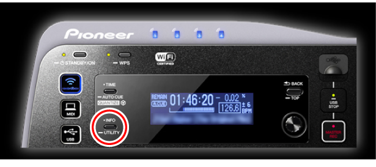
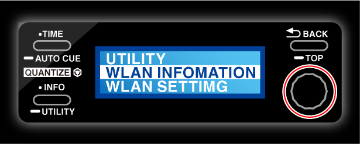
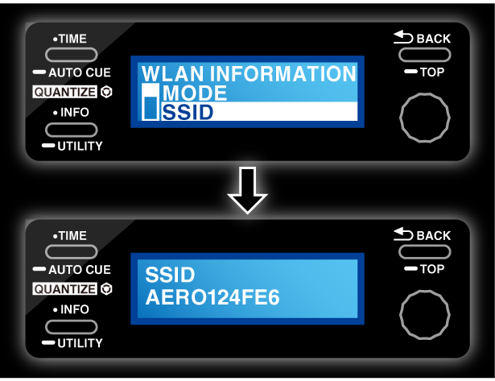
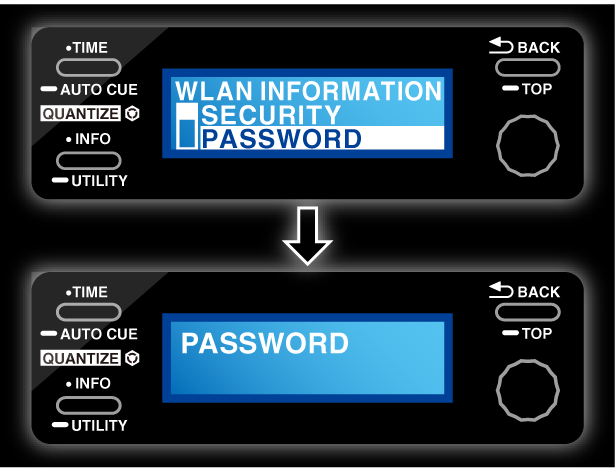
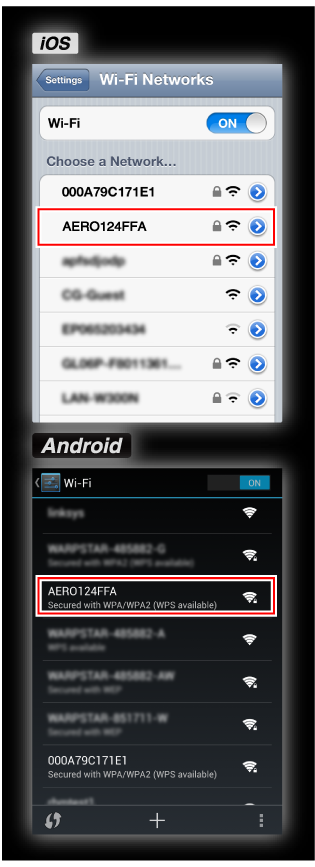
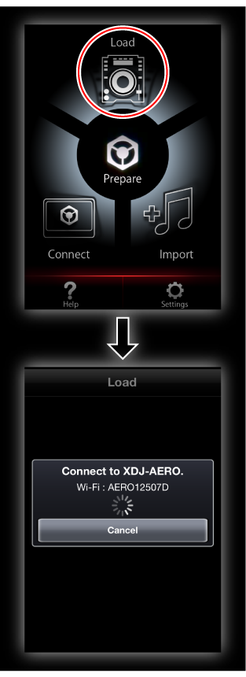
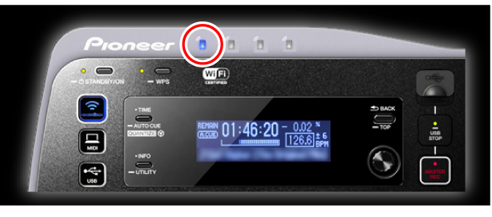

Zusätzliche Informationen
XDJ-AERO-Anschlussanleitung
Um die Kommunikation zwischen einem mobilen Gerät und dem XDJ-AERO herzustellen, müssen zuerst die SSID und das Passwort des XDJ-AERO geprüft werden.
Vor der Verwendung von XDJ-AERO lesen Sie sorgfältig die Broschüre „Vor Gebrauch lesen“ und die „Bedienungsanleitung“ CD-ROM durch, die mit dem XDJ-AERO mitgeliefert sind.
1Wenn die [INFO/UTILITY]-Taste am XDJ-AERO für länger als 1 Sekunde gedrückt wird, erscheint das [UTILITY]-Menü am Hauptgerät-Display des XDJ-AERO.

2Drehen Sie den Dreh-Codierer des XDJ-AERO, um [WLAN INFORMATION] zu wählen, und drücken Sie dann den Dreh-Codierer.

3Wenn der Dreh-Codierer des XDJ-AERO gedreht wird, um [SSID] zu wählen und dann Dreh-Codierer gedrückt wird, wird die SSID des XDJ-AERO angezeigt.

4Drücken Sie die [BACK/TOP]-Taste am XDJ-AERO, um zur vorherigen Anzeige zurückzukehren.
5Wenn der Dreh-Codierer des XDJ-AERO gedreht wird, um [PASSWORD] zu wählen und dann Dreh-Codierer gedrückt wird, wird das Passwort des XDJ-AERO angezeigt.

6Öffnen Sie den Bildschirm für Wi-Fi-Einstellungen am mobilen Gerät, tippen Sie auf die SSID des XDJ-AERO, und geben Sie dann das Passwort ein.

7Starten Sie rekordbox auf dem mobilen Gerät, und tippen Sie dann auf [Load] im Top-Menü.

Wenn die Verknüpfung zwischen rekordbox und dem XDJ-AERO hergestellt wird, leuchtet die Anzeige oben links am XDJ-AERO auf.
